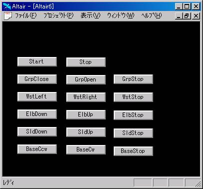

MR-999/IF-99 OLE Control
第0.43版 2016年10月23日
第0.32版 2003年 8月15日
概要
MR999.ocxは、ロボットアーム MR-999 を インターフェースボード IF-99 で
PCから制御するためのOCX（OLEコントロール）です。
Microsft Visual BasicなどのOCXコンテナになっている開発ツールを使うと、
その開発ツールの開発言語で、ロボットアームの制御プログラムが書けます。
PCとMR-999/IF-99との間のインターフェース
PCとMR-999/IF-99との間のインターフェースはRS232Cです。
・8bitのバイトデータを、約200ミリ秒単位にPCからIF-99に送信。
・8bitのバイトデータの意味は以下。
● ff
停止
1111 1111
● df
デリミッター
1101 1111
● 80-9f
デリミッターの次（モーターの回転方向の指示）
100x xxxx
B SEWG
ビットが0か1かで回転方向を決める
（１バイトで、全関節の回転方向を決める）
● e0-ff
デリミッターの次の次以降、デリミッターが来るまで （回転させるかの指示）
111x xxxx
B SEWG
0なら回転させる、1なら回転させない
（５つの関節を同時に動かすことができる）
名前は、「MR999 Control」で、ProgIDは、「MR999.MR999Ctrl.1」です。
メソッド
8bitのコマンドデータ列の送信を始めます。
失敗すると0、成功すると1が返ります。
8bitのコマンドデータ列の送信を終了します。
指を閉じることを始めます。
指を開くことを始めます。
指を動かすことを止めます。
手首を左に回すことを始めます。
手首を右に回すことを始めます。
手首を動かすことを止めます。
肘を曲げることを始めます。
肘を伸ばすことを始めます。
肘を動かすことを止めます。
肩を曲げることを始めます。
肩を伸ばすことを始めます。
肩を動かすことを止めます。
ベースを反時計回りに動かすことを始めます。
ベースを時計回りに動かすことを始めます。
ベースを動かすことを止めます。
プロパティ
使用するシリアルポートの名前です。
デフォルトは、COM1 です。
8bitのコマンドデータを送る時間間隔です。
デフォルトは、200（ミリ秒）です。
サンプル
前準備
Altairのサンプルの前準備で、
ライブラリgbgp.albが作成されていることを確認してください。
プロジェクトgbgp.aprを開いてください。
クラスGbGpをダブルクリックしてください。
関数Runのところにキャレットをおいて
メニューの「インタプリタ - 実行」を行ってください。
これでGbGpサンプルが立ち上がります。
「開く」ボタンでrobot_arm/robot_arm.gprを開いてください。
ここで画面のの「Start」ボタンを押してください。
コマンドの送信が始まります。
メソッドの名前と同じボタンがあるので、それを押せば、
その通りにMR-999ロボットアームが動きます。
